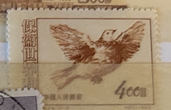
| SOURCE | TITLE| IMAGE MATCH | click to source page |
| HipStamp | China Stamp: 1953-Sc#187-9 World Peace Picasso Dove ; Mnh-Set of 3 Stamps | Asia - China, General Issue Stamp / HipStamp | 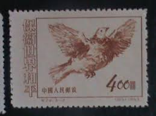 |
| Find Your Stamps Value | World Peace: Picasso Dove - 保护世界和平：毕加索鸽子$800 Purple stamp price, value |  |
| eBay | R7/24 China Stamp 1951 Peace Complete Set Of 3 T24.3-1 -3 MNHNGAI Great Coll | eBay |  |
| eBay | 1953 China Sc# 187-89 - Picasso Dove Set - MH postage stamps Cv$7 | eBay | 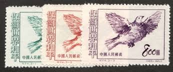 |
| GetArchive | 10 Animals On Stamps Of China Image: PICRYL - Public Domain Media Search Engine Public Domain Search} |  |
| BidCurios | Birds Used China - P0840 - BidCurios |  |
| eBay | Chinese Stamp Collections & Mixtures for sale | Shop with Afterpay | eBay Australia |  |
| Find Your Stamps Value | World Peace: Picasso Dove - 保护世界和平：毕加索鸽子$400 Orange brown stamp price, value |  |
| Shutterstock | China Prc 1953 July 25 800 Stock Photo 2195282077 | Shutterstock | 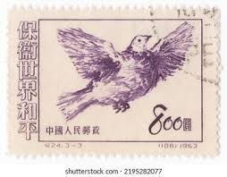 |
| eBay | Mint No Gum/MNG Birds Chinese Stamps for sale | eBay |  |
| Vivido.cz | For world peace - Philately and numismatics - www.vivido.cz | 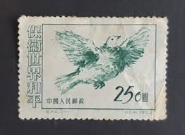 |
| lastdodo.com | Dove Of Peace (1953) - China - People's Republic - LastDodo | 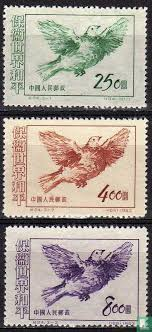 |
| eBay | People's Republic of China Scott #187 Mint No Gum As Issued | eBay | 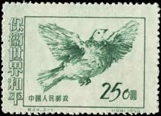 |
| Xabusiness.com | 1953 China Stamps |  |
| eBay | 752147) VR China Nr.212-214(*) für den Weltfrieden | eBay | 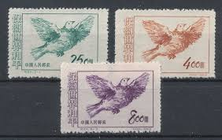 |
| eBay | China Sc 187-9, C24, Mint, No Gum As Issued, Fresh Color, Very Fine | eBay | 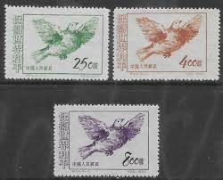 |
| eBay | PR CHINA Stamp - 1953 World Peace Dove 8$ Sn 189 MNG r5 | eBay |  |
| eBay | China Sc 187-9, C24, Mint, No Gum As Issued, Fresh Color, Very Fine | eBay |  |
| eBay | China stamps Sc#187-189 "World Peace" three stamps Unused | eBay |  |
| Carousell | China Stamps C24 MNH NGAI, Hobbies & Toys, Memorabilia & Collectibles, Stamps & Prints on Carousell |  |
| Shutterstock | Vintage Animal Stamp: Over 42,473 Royalty-Free Licensable Stock Photos | Shutterstock | 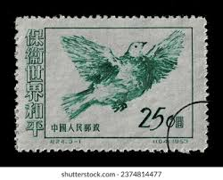 |
| eBay | CHINA PRC 1953 C24 Defend World Peace 3-3 Imprint Marginal MNH XF | eBay | 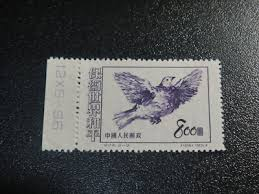 |
| Shutterstock | 2,240 Dove July Royalty-Free Images, Stock Photos & Pictures | Shutterstock | 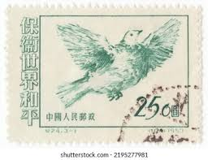 |
| Free stamp catalogue | Stamps from China People's Republic - Freestampcatalogue.com - The free online stampcatalogue with over 500.000 stamps listed. | 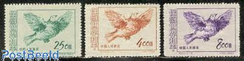 |
| Margipood | China - Page 4 of 44 - Margipood | 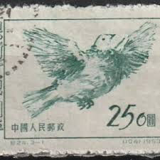 |
| eBay | China, Peoples Rep. of, Scott 187-189 (1953) Mint LH F-VF, CV $7.00 Q | eBay |  |
| Hey guys,I hope this item will cover for that Scott catalogue add | 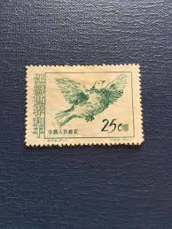 | |
| UNC.UA | Китай 1953 Голубь мира Пикассо фауна птицы 250 гаш. о купить на | Аукціон для колекціонерів UNC.UA UNC.UA | 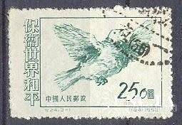 |
| Find Your Stamps Value | Peace Conference of the Asian and Pacific Regions: Picasso dove over Pacific - 庆祝亚洲及太平洋区域和平会议: 毕加索鸽子世界以上$400 Maroon stamp price, value | 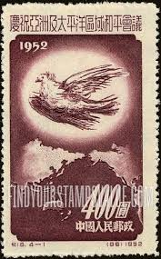 |
| eBay | China 1953 World Peace MNH VF (NGai) | eBay |  |
| eBay | China 1953 - Mint stamps issued without gum. Mi nr.: 212-214..... (VG) MV-12689 | eBay | 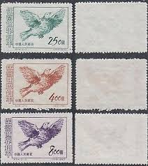 |
| danstopicals.com | Poor Drawing and No Country Name | 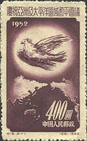 |
| us-china-stamps.com | C24 Defend World Peace (3rd Set), C30 Constitution of PRC | 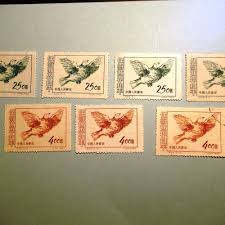 |
| PicClick | CHINA PRC. Qty 5 pages from a world collection. $1.34 - PicClick | 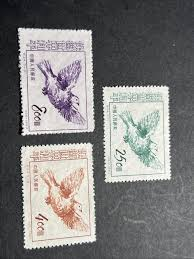 |
| Stamp Auction Network | Prices Realized |  |
| Find Your Stamps Value | Peace Conference of the Asian and Pacific Regions: Doves and Globe - 庆祝亚洲及太平洋区域和平会议: 鸽子和地球$800 Brown orange stamp price, value | 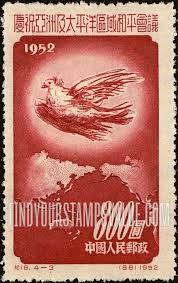 |
| eBay | Ryukyu Islands 74 (1959) 3c Egret and Rising Sun block of four never hinged | eBay |  |
| eBay | PR China 1953 C24, Scott 187-189 Defend World Peace Dove CTO NGAI VF C | eBay | 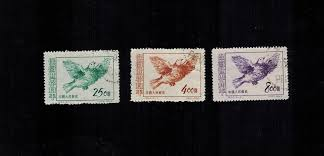 |
| eBay | 3 Cent US Possessions Stamps for sale | eBay |  |
| eBay | Mint Never Hinged/MNH Birds Japanese Stamps for sale | eBay |  |
| HipStamp | China-1951-Sc#108-110 Picasso Painting-Peace Dove-Fancy Cancel VF Rare | Asia - China, General Issue Stamp / HipStamp | 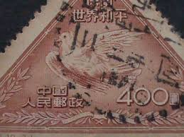 |
| Etsy | Set of 4 1952 China Stamps | - Etsy |  |
| eBay | 1950 JAPAN Pheasant Air mail Completed set Mint ,High Value JPY 60,000 (USD520) | eBay | 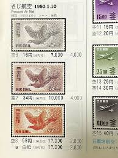 |
| So I reached 10k stamps!! : r/stamps | 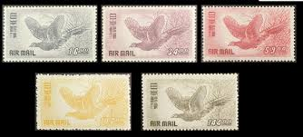 | |
| Stamp Auction | H.R. Harmer, Inc. Sale - 3012 Page 100 |  |
| eBay | PRC China, 1952, sc#167, Mint, Never Hinged, NGAI | eBay | 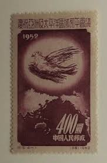 |
| Alamy | AUSTRALIA - CIRCA 1993: a stamp printed in the Australia shows Ornithocheirus, Pterosaur, Flying Dinosaur, circa 1993 Stock Photo - Alamy | 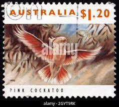 |
| Shutterstock | Peace Old Stamp: Over 2,919 Royalty-Free Licensable Stock Photos | Shutterstock | 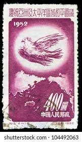 |
| eBay | RYUKYU 1960 LITTLE EGRET AND RISING SUN MNH Sc 74 | eBay |  |
| Stamp Auction Network | SAN Unattended Live Bidding Catalog Level 3 | 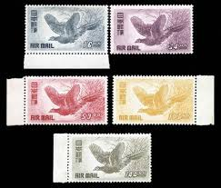 |
| eBay | China C24 Defend World Peace Set of 3v - Used (SL192) | eBay | 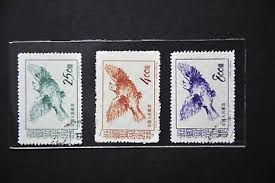 |
| eBay | China - 1952 Asian Pacific Peace Conference | eBay | 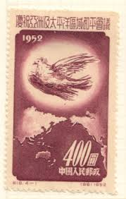 |
| Shutterstock | mao Tsetung": Over 1,854 Royalty-Free Licensable Stock Photos | Shutterstock | 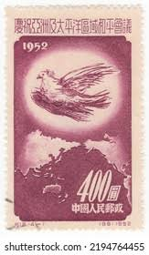 |
| eBay | Japan 1950 - Mihon Overprint - Specimen Overprint (LP 9) Mint Hinged | eBay | 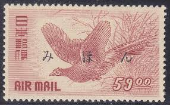 |
| eBay | People's Republic of China Scott #168 Mint No Gum As Issued | eBay | 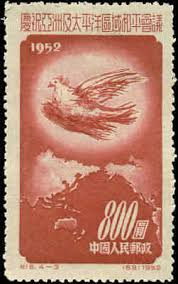 |
| eBay | Birds Air Mail Stamps for sale | eBay |  |
| eBay | Birds Air Mail Japanese Stamps for sale | eBay | 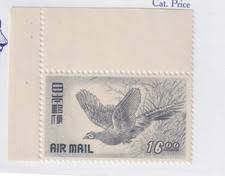 |
| eBay | Japanese Bird Postal Stamps for sale | eBay |  |
| eBay | Japan 1950 MI 494-498 BIRDS MLH VF | eBay | 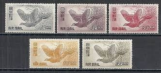 |